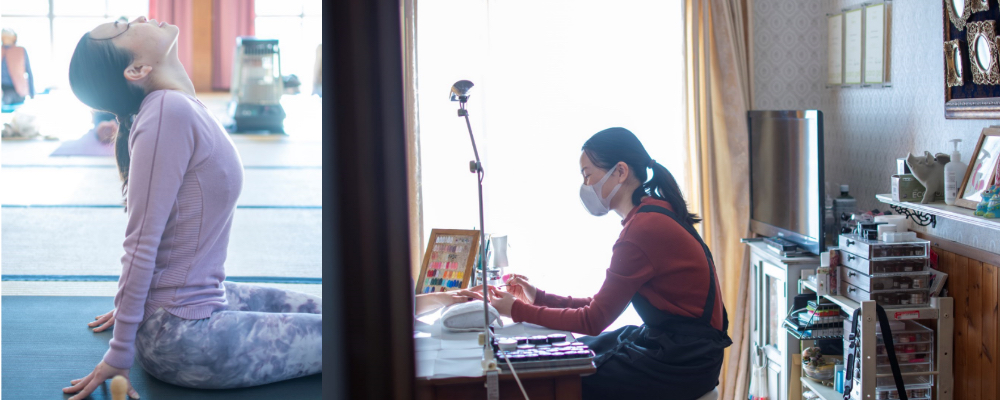
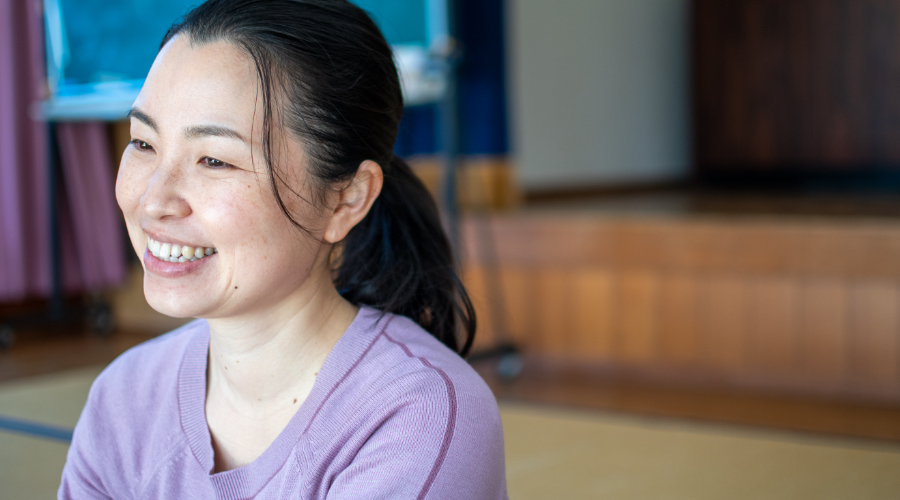
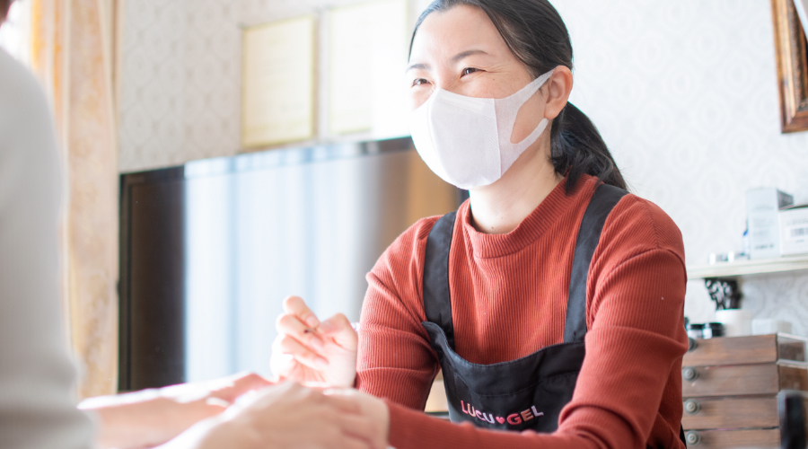
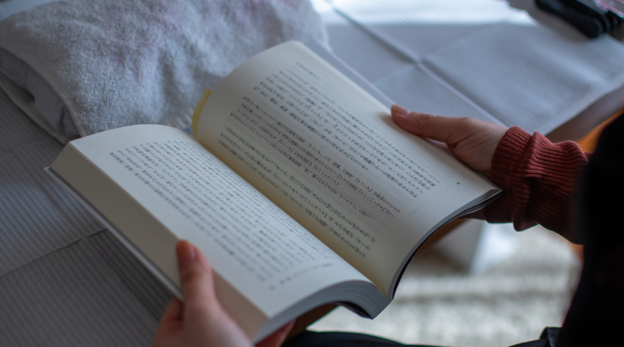

vol. 001 
user’s voiceヨガインストラクター・ネイリスト
塩澤智保さん
ヨガインストラクター・ネイリスト・デザイナーとして３足のわらじを履き日々の生活を楽しんでいる、笑顔の素敵な塩澤智保さんに仕事を始めたきっかけなどについて聞いた。
30の時がきっかけだった。今しかない！って。

－－元々は会社員として働いていた、なぜヨガインストラクター・ネイリストの道に？？
20代の時も自分で何かしたいと思っていて、フツフツはしてたけど、自分にスキルも知識もないし、どうなるかもあやふやで、30過ぎたら何かやりたいと思っていたんです。
ヨガやネイルをやり始めて、知識や技術も身に付いて、もっと自分がやりたい事をやりたい気持ちが強くなり、30の節目に「やめちゃおう！」と思い前職を辞めました。
迷ったらやると決めてる。失敗しても良いから。
－－辞める時躊躇しなかったですか？
父親や母親には会社員を辞める事を止められました。安定していないし、保証もされていないから。しかも30歳で結婚もしていなくて・・・実際、手放した時は不安だったんです。でもそこを気にしていたら1人でやっていくのは大変だろうと思ったんです。
でも、「自分が良いと思ったものを提供していこう！」とスイッチを切り替えたら自分も楽になって、みんなが良いと思ってくれたらそれで良いかなと思えるようになってきました。
とにかく興味がある事には突き進む。「好きな物みつけたら迷わずに！！」
－－ヨガを始めたきっかけは？
ヨガを始めたのは母親に誘われたのがきっかけです。
３ヶ月くらいしたときに体が変わって「えっ！ヨガってすごいかもしれないと思って」そこからハマったんです。その頃、お父さんが病気になったりして、ヨガは呼吸法もあるし良いだろうな～と思ったんです。
身体の構造も知らなかったから、もうちょっと勉強したいと思って今の先生に出会ったんです。それがちょうど5年前くらいでした。
自分や家族のために始めたヨガで、インストラクターにまでなるとは当初は思ってもいなかったという塩澤さん。
気になり出したら色々と勉強したくなり、日本でもインドの先生に教わっていたけれど、インドに行った事もなく、話でしか聞いた事がない国で生まれたヨガを、自分の目でちゃんと見たくていつか行きたいと思っていました。
ちょうど一昨年、時間とタイミングがあって１ヶ月インドに行ってきました。日本とは全く違って、物もないし、道も舗装されていないし、ネットも使えないし、テレビもないんだけれど、とても豊かな印象でした。
そんな世界の中にヨガあるから、その本場を見てきて自分が変わってこれたような気がしました。
ネイルもやってみる

－－ネイルをやろうと思ったきっかけは？
テレビで海外のネイリストさんが出ていて、その頃はまだネイルが普及していなくて、テレビで施術しているのを見て、「うわ～すごい！いいな！かっこいいなぁー」と思って見ていました。
ネイルも普及してきた頃、アートも好きだしデザインも好きだから、ネイルやってみようかなと思ったのがきっかけでした。
本屋さんで素敵なネイルアートが掲載されている本にネイルの教室もあると記載があって、説明を聞きに行き、その場でやります！と通い始めました。
きっかけは色々なんですが、「そうだ！やろう！」と思ったら動いちゃうんです。
自分の好きな事があったら、ひとつひとつ追求すれば
それはそれで良いのかなと、今になっては思うように。

－－何でも挑戦したい塩澤さん、今後やってみたい事はありますか？
ヒマラヤ密教を見てみたい。
インドからきて、日本まで渡ってきたところ、チベットの人たちがどんな生活をしているのかを実際に見てみたいと思っています。ルーツはどうなって日本に来たのかなっていうのが興味があります。
知りたい！見てみたい！学びたい！ホントに単純な気持ちから来ているんだと思います。
あとは、デザインの勉強をしたいです。目の肥やしのためにニューヨークに行き美術館やアート、芸術を実際に見に行きたいと思っています。体力のあるうちに、元気のあるうちにやれる事は全てやっておきたいんです。
hugmナチュラルシャンプーを使ってみて
－－hugmナチュラルシャンプーを使ってどうでしたか？？
まず、香りが好きでした。シャンプーしてても良い香り～♪と気分が良かったです。
泡立ちもすごい良かったです。
自分好みのシャンプーを見つけるのって以外と大変で、かといってものすごい高いものもあったり、安いのもあったり・・・
ナチュラルなものとかだと、ヨガの先生とかこだわっている人とかが多いからhugmは、いいなぁ～と思いますね。
編集後記
とにかく、何に対しても前向き、笑いながら何でも話す塩澤さん、あれもこれも・・・とにかく気になるものは自分で学んで体験していきたいという気持ちで前に進み続けている。
「前向き、とにかく前向き、結果前向き」
前向きに何でも取り組めば、光が見えてくる。そんな事を教えられたような気がする。
「誘いがなかったらヨガやってなかったから、人生って分からないもんだから」
自分に起こる全ての事を笑って受け入れる。
そんな塩澤さんの姿がとても美しかった。